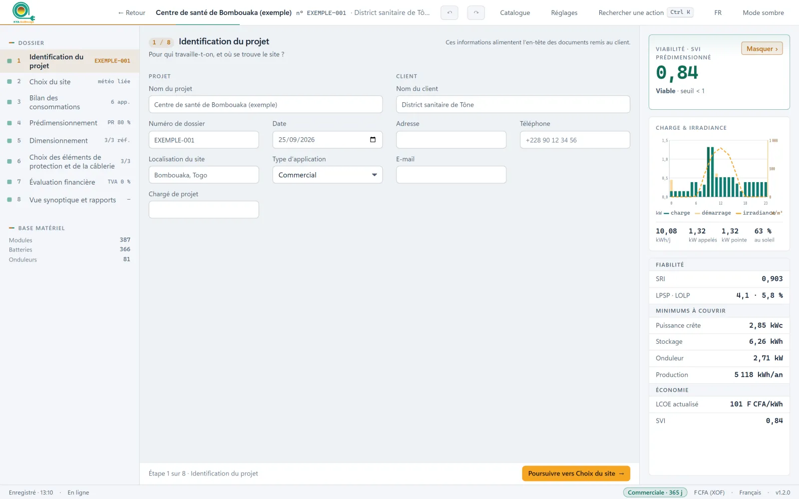

KYA-SolDesign Disponible
Dimensionnement des installations photovoltaïques autonomes, du site au dossier client.
KYA-SolDesign conduit une étude complète, du site et de sa météo jusqu'au dossier remis au client. Deux façons de s'en servir : choisissez la vôtre.
La méthode derrière KYA-SolDesign a été appliquée à plus de 500 installations en Afrique de l'Ouest avant de devenir un logiciel. Elle est aujourd'hui entre les mains de ceux qui conçoivent et de ceux qui apprennent.
Chaque étape part des résultats de la précédente. Les écrans ci-dessous viennent du projet exemple livré avec le logiciel.

Chaque logiciel s'achète sous licence, se met à jour tout seul et se retrouve dans votre espace client.
Dimensionnement des installations photovoltaïques autonomes, du site au dossier client.
Étiquetage énergétique et économique des systèmes de production renouvelable.
Nous remettons maintenant le rapport, la proforma et le schéma dans la même journée que la visite du site. Nos clients voient la fiabilité chiffrée avant de signer.
Les étudiants dimensionnent un vrai centre de santé, avec la météo du site, et comprennent enfin pourquoi un système moins cher peut tomber en panne en août.
Des installations dimensionnées avec la méthode KYA, en Afrique de l'Ouest.
Le paiement se fait en ligne par Mobile Money ou carte bancaire ; la licence apparaît aussitôt dans votre espace client et s'active dans le logiciel avec sa clé.